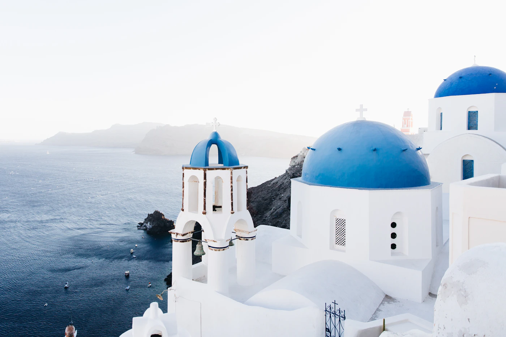

Reiseführer / Korfu
Korfu — beste Reisezeit, Flughafen, welche Bucht für wen

Wann nach Korfu reisen — Saison und Zeit
Die Hauptbadesaison dauert von Mitte Mai bis Ende September — das Meer erwärmt sich im Juni am schnellsten und bleibt bis Oktober warm. Juli und August sind am vollsten und teuersten (sowohl Unterkunft als auch Flüge), während Juni und September ruhiger, günstiger und weiterhin gut für den Strand geeignet sind. Außerhalb der Saison ist die Insel grün und ruhig, gut für die Erkundung der Stadt Korfu und des Landesinneren, aber das Meer ist zu kalt zum Baden.
Flughafen Korfu und der Weg zur Unterkunft
Der Flughafen Ioannis Kapodistrias (CFU) liegt direkt neben der Stadt Korfu, praktisch in ihr — ins Zentrum sind es mit dem Taxi nur etwa 10 Minuten. Für die nördlichen und nordöstlichen Buchten (Kassiopi, Sidari, Akharavi) rechne mit 40-60 Minuten Fahrt, für den Süden der Insel (Kavos) sogar bis zu 1 Std. 15 Min. Ein Mietwagen lohnt sich deshalb oft selbst für einen kürzeren Aufenthalt, da der öffentliche Nahverkehr zwischen den entfernteren Buchten selten ist.
Welche Bucht auf Korfu ist für wen
- Kassiopi und Nissaki (Nordosten) — ruhigere, felsige Buchten mit klarem Wasser, gut für Paare und ältere Familien, weniger geeignet für kleine Sandstrände.
- Sidari (Norden) — Sandstrände, seichteres Wasser und viel Angebot für Kinder; bekannt auch für die Felsformationen „Canal d'Amour".
- Paleokastritsa (Westen) — die meistfotografierte Bucht der Insel, spektakulär, aber im Sommer sehr überlaufen — vor 10 Uhr und nach 17 Uhr ist die beste Besuchszeit.
- Kavos (Süden) — Zentrum des Nachtlebens, für junge Leute, die ausgehen wollen, nicht für einen ruhigen Familienurlaub.
- Stadt Korfu (Kerkyra) — UNESCO-Altstadt, eine gute Basis, wenn du sowohl Strand als auch abendliche Spaziergänge durch die Stadt ohne lange Fahrten möchtest.
Was eine Reise nach Korfu kostet — Richtpreise
- Liegen und Sonnenschirm — ab 10-15 € pro Paar an ausgebauten Stränden in der Saison, kostenlos an wilden Buchten.
- Taxi vom Flughafen ins Stadtzentrum — etwa 10-15 €, zu entfernteren Buchten (Sidari, Kassiopi) auch über 40 €.
- Essen in Tavernen abseits der Hauptbuchten — 12-18 € pro Person für Fisch oder Gegrilltes mit Beilage.
- Mietwagen — ab 25-35 € pro Tag in der Saison, im Juli/August unbedingt im Voraus buchen.
Praktische Tipps vor der Buchung
- Dokumente — Griechenland gehört zum Schengen-Raum; prüfe die Einreisebestimmungen für deine Staatsangehörigkeit vor der Reise.
- Fähre nach Sarandë (Albanien) — Ausflug ab der Stadt Korfu, ein guter Tagesausflug bei längerem Aufenthalt und gültigen Dokumenten für den Grenzübertritt.
- Lage der Unterkunft — wähle nach der Bucht, die du am meisten nutzen wirst, nicht nach dem niedrigsten Preis am anderen Ende der Insel — Fahrten auf Korfu dauern wegen der Bergstraßen länger, als es auf der Karte aussieht.